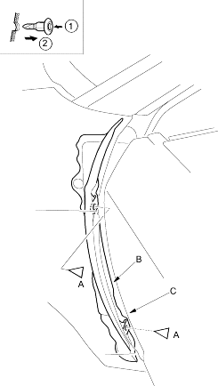
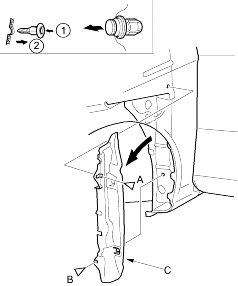
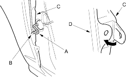

- Remove the front inner fender as necessary (see page 20-121).
- Open the front door. From outside the door, remove the upper clip (A), and from inside the door, remove the lower clip (A) securing the front fender fairing (B) and front fender (C).
Fastener Locations A  : Clip, 2
: Clip, 2

- From the wheel arch, remove the clip (A), and release the clip (B), then remove the front fender fairing (C).
| Fastener Locations | |
A  : Clip, 1 : Clip, 1 |
B  : Clip,1 : Clip,1 |

- Install the fender fairing in the reverse order of removal, and note these items:
- Replace any damaged clips.
- If equipped, route the side turn signal light harness (A) through the slit (B) of the front fender fairing (C).
- Before installing the clips in the door opening area, install the front fender fairing (C) to the front fender (D) properly as shown.
